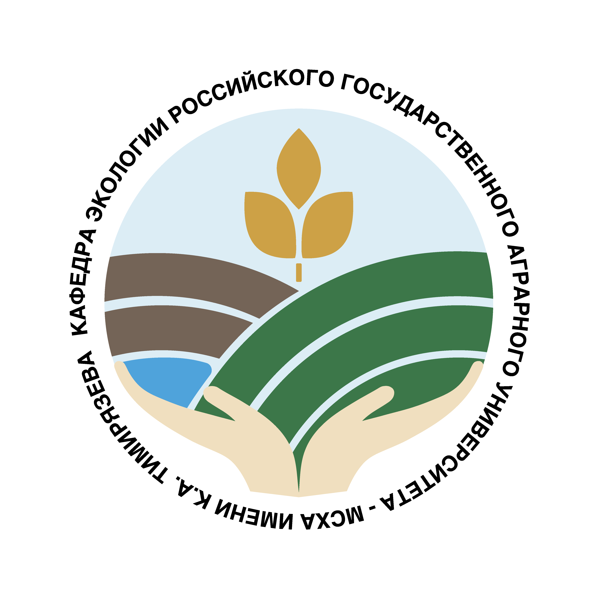

И. О. ЗАВЕДУЮЩЕГО КАФЕДРОЙ
Тихонова Мария Васильевна
Исполняющая обязанности заведующего кафедрой экологии

СтуденческоеКафедра экологии · РГАУ-МСХА имени К.А. Тимирязева
Как устроена среда вокруг нас? Что меняется в почве, воде и городских экосистемах? Сделай первый шаг в исследование вместе со студенческим научным обществом кафедры экологии.
Для первого шага достаточно интереса к теме.
01 / ЗНАКОМСТВО
Студенческое научное общество кафедры экологии РГАУ-МСХА имени К.А. Тимирязева.
Интерес к экологии начинается с наблюдений и вопросов. Как сравнить состояние двух участков? Чем объяснить различия в пробах? Как отличить закономерность от случайности? На этой странице — ориентиры для первого исследования и план работы СНО.
Сайт кафедры — ecolog.proИ. О. ЗАВЕДУЮЩЕГО КАФЕДРОЙ
Исполняющая обязанности заведующего кафедрой экологии
РУКОВОДИТЕЛЬ СНО
Старший преподаватель кафедры экологии
alexandrov_na@rgau-msha.ruСТУДЕНЧЕСКИЙ АКТИВ
Хочешь участвовать в организации встреч, рассказывать о научных событиях или предлагать свои проекты? Присоединяйся к активу СНО.
Хочу в команду02 / ЖИЗНЬ СНО
Новости о событиях, организованных с участием СНО: встречи, исследования, экологические акции и другие совместные проекты. Публикуем материалы кафедры и университета со ссылками на первоисточник.
Здесь появятся новости о мероприятиях с нашим участием.
03 / ЗА ПРЕДЕЛАМИ КАФЕДРЫ
Внешние конференции, круглые столы, конкурсы и научные школы, в которых могут участвовать студенты. В объявлениях — сроки подачи заявок, условия участия и ссылки на организаторов.
Знаешь интересное мероприятие? Пришли ссылку — добавим его в раздел.
04 / ПЕРВЫЙ ШАГ
Выбери то, что интересно сейчас.
Выбери тему, о которой хочется узнать больше. Прочитай несколько работ и запиши, что осталось непонятным.
Как выбрать темуСформулируй гипотезу, обсуди её с научным руководителем и подумай, какие данные помогут её проверить.
Составить планПодготовь доклад, постер или статью. Обратная связь помогает увидеть работу под новым углом.
Подготовить доклад05 / ПЛАН РАБОТЫ
Мероприятия, сроки и направления работы на 2026/2027 учебный год.
Открыть PDF06 / БАЗА ЗНАНИЙ
Короткие ориентиры, к которым можно вернуться в процессе работы.
Начни с вопроса, который тебе интересен. Сузь его до конкретного явления, территории и периода наблюдений. Проверь, что по теме уже написано и к каким данным у тебя есть доступ.
Вместо «Экология города» — «Как различается видовое разнообразие травянистых растений на участках с разной рекреационной нагрузкой?». Это пример постановки вопроса; выбор участков, метод учёта и границы выводов стоит обсудить с руководителем.
Запиши исследовательский вопрос, цель и ожидаемый результат. Определи подходящий метод, источники данных, этапы и сроки. Обсуди с руководителем ограничения выбранного подхода.
Разбей работу на небольшие задачи: обзор литературы, выбор метода, сбор и анализ данных, обсуждение результатов. Если работа предполагает участие людей, заранее уточни требования к согласию участников и защите данных.
Сохраняй автора, название, год, ссылку и свои заметки по каждой работе. Отделяй прямые цитаты от собственного пересказа и фиксируй страницы цитат сразу.
Оценивай, на каких данных основаны выводы и подходят ли они к твоему вопросу. Формат ссылок и требования к списку литературы уточни у руководителя или в правилах конференции.
Выстрой рассказ вокруг одного вопроса: почему он важен, как ты его исследовал, что получилось и что это значит. Покажи ключевые данные и обозначь ограничения.
Проверь регламент мероприятия, отрепетируй выступление с таймером и оставь время на вопросы. На каждом слайде должна быть одна понятная мысль.
ТВОЯ ИДЕЯ МОЖЕТ СТАТЬ ИССЛЕДОВАНИЕМ
Предлагай темы исследований, семинаров и мероприятий.
Расскажи о своей идее и о том, как с тобой связаться.